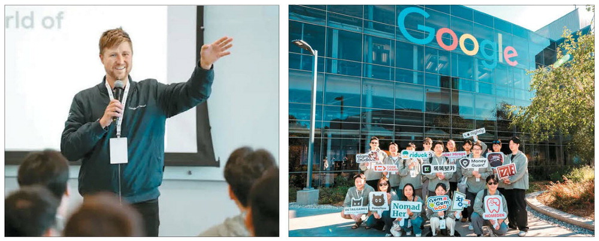

|
"AI보다 WHY가 더 중요"… 구글이 알려주는 스타트업 성공법
구글 글로벌 연수 프로그램 '이머전 트립' 현장
사진 확대 구글 이머전 트립 참석자들에게 미국 진출 노하우를 설명하고 있는 맷 라이드나워 구글 미국 스타트업 액셀러레이터 총괄(왼쪽) 모습과 기념사진을 촬영하는 참석자들. 구글
지난달 13일(현지시간) 미국 캘리포니아주 마운틴뷰 구글 본사 강당. 한국의 게임·애플리케이션 스타트업 창업자와 최고경영자(CEO) 15명이 모였다. 이들은 구글이 한국 스타트업을 지원하기 위해 2019년부터 운영해온 '창구' 프로그램의 글로벌 연수 과정인 '이머전 트립(Immersion Trip)'에 선발된 기업들이다. 올해는 처음으로 구글 본사에서 현지 교육이 열렸다. 창구는 구글플레이가 중소벤처기업부·창업진흥원과 협력해 매년 국내 유망 앱·게임 개발사를 선발해 콘텐츠 고도화와 해외 진출을 지원하는 프로그램이다. 2023년 일본, 2024년 싱가포르에서 각각 연수를 진행한 데 이어 올해는 스타트업들이 가장 선호하는 해외 진출지로 꼽힌 미국에서 행사가 마련됐다. 이어 미디어 전문가인 민디 스태니스로바이터스 WPP미디어 에이전시 수석부사장이 미국 광고·미디어 시장의 흐름을 짚었다. 두 사람은 각기 다른 주제를 다뤘지만 공통적으로 한국 스타트업에 "미국은 기회가 큰 만큼 준비가 철저해야 한다"는 메시지를 던졌다.
그는 "미국은 세계 최대 스타트업 생태계이자 유니콘 기업의 절반이 탄생한 곳"이라며 "벤처캐피털(VC) 자본만 2000억달러에 달한다"고 소개했다. 그러나 막대한 자본이 있다고 해서 누구나 투자받을 수 있는 것은 아니다. 그는 "VC는 매일 수백 개의 이메일을 받는다"며 "짧은 시간 안에 왜 우리 회사가 투자 적격 대상인지 설득해야 한다"고 말했다.
특히 스토리텔링의 힘을 거듭 강조했다. 그는 "누구나 앱과 기술을 만들 수 있는 인공지능(AI) 시대에는 '왜 이 회사를 만들었는가' '더 큰 비전은 무엇인가'를 설명하는 것이 핵심"이라며 "투자자뿐 아니라 이용자에게도 울림을 주는 이야기가 필요하다"고 말했다. 라이드나워 총괄은 한국 스타트업이 미국 시장에 진출할 때 가장 먼저 고민해야 할 점으로 '존재감'을 꼽았다. 그는 "투자자와 고객은 회사가 실제로 미국에 뿌리를 내리고 있는지를 본다"며 "본사든 법인이든 혹은 핵심 인재든 미국 내에 있어야 시장 접근성이 열린다"고 말했다. 이어 그는 "한국에서 회사를 키운 뒤 미국으로 진출하는 것도 가능하지만 빠르게 성장하려면 조기에 미국에 발을 들여놓는 것이 유리하다"고 조언했다. 그는 "미국은 전 세계 미디어 지출의 30%를 차지하는 약 3650억달러 규모의 시장"이라며 "특히 동영상 소비가 압도적"이라고 설명했다. 이어 "스포츠를 제외하면 전통적 TV 시청은 급감하고 있으며, 광고 시장의 무게중심이 커넥티드 TV와 온라인 동영상으로 빠르게 이동하고 있다"고 덧붙였다. 소셜미디어 역시 소비자 구매 여정의 핵심 관문으로 자리 잡고 있다. 실제로 미국 내 전자상거래 매출의 약 7%가 소셜 플랫폼을 통해 발생하며, 구매 전 단계에서 브랜드를 접하는 비율은 80%를 웃돈다. 스태니스로바이터스 수석부사장은 "AI는 광고 집행 최적화부터 크리에이티브 제작, 성과 분석까지 이미 전 과정에 스며들고 있다"며 "하나의 영상 자산을 AI로 5~6개 포맷으로 변환해 플랫폼에 맞게 배포할 수 있다. 이는 스타트업에도 기회"라고 강조했다.
"매출보다 중요한 것은 사람들이 얼마나 시간을 쓰고 반복적으로 찾는가"라고 강조했다. 또 창업자가 직접 미국에 와서 의사결정을 내리고 현지 인재를 뽑는 것이 무엇보다 중요하다고 조언했다. 참가자들은 UX 디자인·크리에이티브 전략·실리콘밸리 투자자 설득법 등을 배우고 현지 스타트업·투자자와 교류했다. 한 참가 스타트업 대표는 "미국 시장은 크기도 크지만 생태계가 너무 달라 감만으로 접근하기 어렵다"며 "이번 연수를 통해 구체적인 전략을 얻었고, 바로 실행에 옮길 수 있을 것 같다"고 말했다. 구글 측은 "해외 진출을 모색하는 스타트업이 정보 부족으로 어려움을 겪는 경우가 많다"며 "이번 이머전 트립은 현지 시장에 특화된 정보와 전략을 제공하고, 투자자 및 생태계와의 접점을 만들어 실질적 성장을 돕기 위한 것"이라고 밝혔다.
|